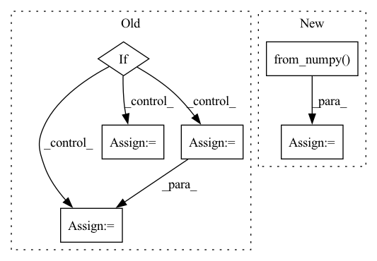

Pattern ID :26128
Before Change
M[0:2, :], (input_res * 2, input_res * 2),
flags=cv2.INTER_CUBIC)
if det is not None:
// detection for bbox
bbox = get_bbox(img_for_crop, det)
width = bbox[2] - bbox[0]
height = bbox[3] - bbox[1]
center = np.array([(bbox[0] + bbox[2]) / 2.0,
(bbox[1] + bbox[3]) / 2.0])
else:
// Assume that the person is centerered in the image
height = img_for_crop.shape[0]
width = img_for_crop.shape[1]
center = np.array([width // 2, height // 2])
scale = max(height, width) / 180
After Change
detector = detection.maskrcnn_resnet50_fpn(pretrained=True)
detector.eval()
predictions = detector(
[torch.from_numpy( img_for_crop) .permute(2, 0, 1) / 255.])[0]
human_ids = torch.logical_and(
predictions["labels"] == 1,
predictions["scores"] == predictions["scores"].max()).nonzero().squeeze(1)
bbox = predictions["boxes"][human_ids, :].flatten().detach().cpu().numpy()
width = bbox[2] - bbox[0]
height = bbox[3] - bbox[1]In pattern: SUPERPATTERN
Frequency: 3
Non-data size: 6
Instances Fragment ID: 78721136
Project Name: yuliangxiu/icon
Commit Name: 2117636e701293c457554812067b272fcf3f8252
Time: 2022-10-10
Author: yuliang.xiu@tuebingen.mpg.de
File Name: lib/pymaf/utils/imutils.py
M Class Name: AnonimousClass
N Class Name: AnonimousClass
M Method Name: process_image(5)
N Method Name: process_image(6)
M Parent Class:
N Parent Class:
M File Name: lib/pymaf/utils/imutils.py
N File Name: lib/pymaf/utils/imutils.py
M Start Line: 91
M End Line: 132
N Start Line: 111
N End Line: 128
Before Change
img = np.array(Image.open(os.path.join(config.ROOT_DIR, self.fname, img_name)).convert("RGB"))
if self.rect_training:
bboxes = [ann[1:] for ann in annotations if (ann[2] > 0 and ann[3] > 0)]
bboxes = torch.tensor(bboxes)
classes = torch.tensor([ann[0] for ann in annotations])
labels = torch.cat([classes.unsqueeze(1), bboxes], dim=-1)
sh, sw = img.shape[0:2]
img, ratio, pad = letterbox(img, (tg_height, tg_width), auto=False, scaleup=False)After Change
// bboxes = torch.tensor(bboxes).roll(dims=1, shifts=1)
// yolo_xywh = coco_to_yolo_tensors(bboxes[..., 1:5], w0=tg_width, h0=tg_height)
// bboxes[..., 1:] = yolo_xywh
labels = torch.from_numpy( labels)
out_bboxes = torch.zeros((labels.shape[0], 6))
out_bboxes[..., 1:] = labels
else:
out_bboxes = torch.zeros((1, 6)) Fragment ID: 78721104
Project Name: alessandromondin/yolov5m
Commit Name: 6b474e8468a32129b9cc3499a6c96ef9cad8fbc3
Time: 2022-11-25
Author: alessandromondin00@gmail.com
File Name: dataset_ultra.py
M Class Name: MS_COCO_2017
N Class Name: MS_COCO_2017
M Method Name: __getitem__(2)
N Method Name: __getitem__(2)
M Parent Class: Dataset
N Parent Class: Dataset
M File Name: dataset_ultra.py
N File Name: dataset_ultra.py
M Start Line: 94
M End Line: 118
N Start Line: 99
N End Line: 128
Before Change
print("Node\"s feature shape:{}".format(node_feat.shape))
if norm_feature:
node_feat = th.nn.functional.normalize(node_feat, p=2.0, dim=-1)
degs = graph.out_degrees().float().clamp(min=1)
norm = th.pow(degs, -0.5)
shp = norm.shape + (1,) * (node_feat.dim() - 1)
norm = th.reshape(norm, shp)
node_feat = node_feat * normAfter Change
print(" Test label number: {}".format(test_label_idx.shape[0]))
node_feat = th.from_numpy(np.load(os.path.join(base_path, "features.npy"))).float()
walk_feat = th.from_numpy( np.load(os.path.join(base_path, "deepwalk.npy"))) .float()
features = th.cat((node_feat, walk_feat, edge_feat), dim=1)
print("//////////////////////////////// Feature info: //////////////////////////////")
print("Node\"s feature shape:{}".format(node_feat.shape)) Fragment ID: 78721106
Project Name: langgege-cqu/maxp_dgl
Commit Name: 5f428bb0d6bfb9dad16f32ca3d65785469b69c00
Time: 2021-12-11
Author: 8747734+bugczw@user.noreply.gitee.com
File Name: maxp_model_czw/unimp/util.py
M Class Name: AnonimousClass
N Class Name: AnonimousClass
M Method Name: load_dgl_graph(1)
N Method Name: load_dgl_graph(2)
M Parent Class:
N Parent Class:
M File Name: maxp_model_czw/unimp/util.py
N File Name: maxp_model_czw/unimp/util.py
M Start Line: 8
M End Line: 52
N Start Line: 13
N End Line: 47